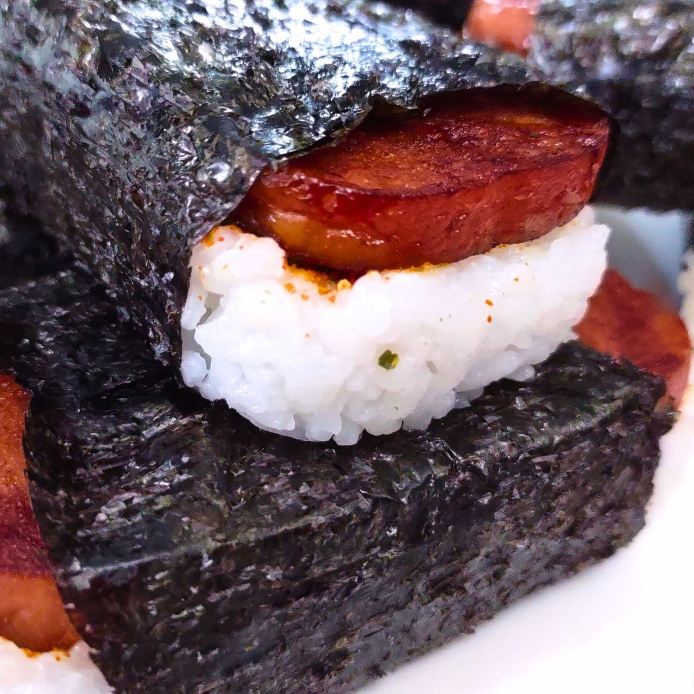

Spam musubi is a popular Hawaiian snack that combines savory grilled Spam, seasoned sushi rice, and crisp seaweed into a convenient handheld treat.
Inspired by Japanese cuisine and local Hawaiian flavors, Spam musubi is loved for its balance of salty, sweet, and umami flavors,
making it perfect for lunches, road trips, or quick snacks.
This recipe features slices of Spam that are pan-fried and glazed with a simple soy sauce and sugar mixture, then layered over compact blocks of
seasoned rice and wrapped with nori. Easy to prepare and highly customizable, Spam musubi is a delicious fusion dish that can be enjoyed warm
or at room temperature.
Voila, there you have it. Enjoy your delicious food!